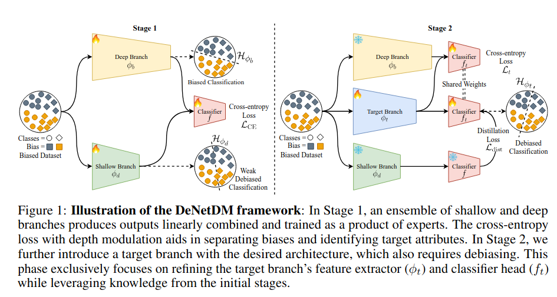
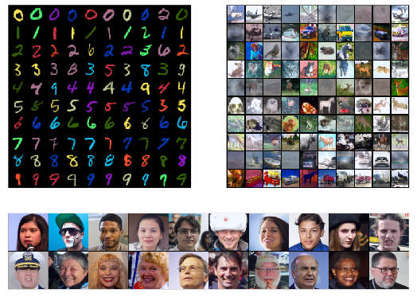
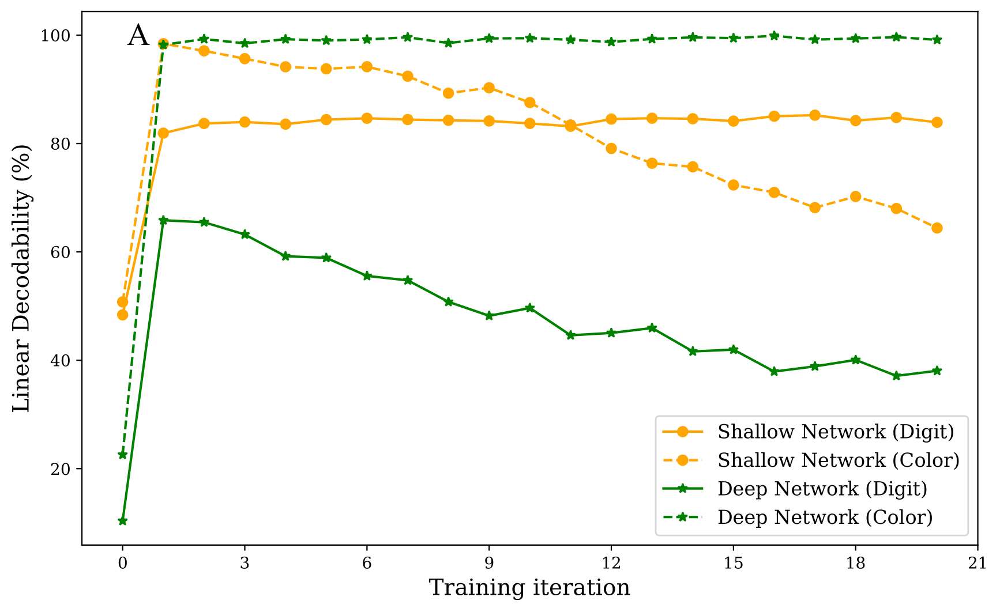

Neural networks trained on biased datasets tend to inadvertently learn spurious correlations, hindering generalization. We formally prove that (1) samples that exhibit spurious correlations lie on a lower rank manifold relative to the ones that do not; and (2) the depth of a network acts as an implicit regularizer on the rank of the attribute subspace that is encoded in its representations. Leveraging these insights, we present DeNetDM, a novel debiasing method that uses network depth modulation as a way of developing robustness to spurious correlations. Using a training paradigm derived from Product of Experts, we create both biased and debiased branches with deep and shallow architectures and then distill knowledge to produce the target debiased model. Our method requires no bias annotations or explicit data augmentation while performing on par with approaches that require either or both. We demonstrate that DeNetDM outperforms existing debiasing techniques on both synthetic and real-world datasets by 5%.
Our hypothesis posits that in a task requiring deep and shallow branches to acquire distinct information, the deep branch consistently prioritizes bias attributes, while the shallow branch favors core attributes.
The predictions of the DeBiased model on Colored MNIST, Corrupted CIFAR-10, and Biased FFHQ demonstrate the model's reliance on core attributes for predictions rather than on biased attributes.
Training dynamics of shallow and deep branches under DeNetDM training. DeNetDM relies on varying linear decodability of bias and core attribute for debiasing.
@misc{sreelatha2024denetdmdebiasingnetworkdepth,
title={DeNetDM: Debiasing by Network Depth Modulation},
author={Silpa Vadakkeeveetil Sreelatha and Adarsh Kappiyath and Abhra Chaudhuri and Anjan Dutta},
year={2024},
eprint={2403.19863},
archivePrefix={arXiv},
primaryClass={cs.LG},
url={https://arxiv.org/abs/2403.19863},
}